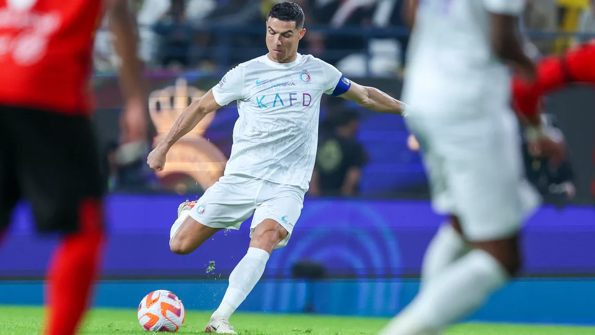

>> Cristiano Ronaldo stars on his 1,200th professional game
- Cristiano Ronaldo has always been a player for the big occasion, so perhaps it was no surprise that the Portuguese
superstar marked his 1,200th professional match with a memorable performance, scoring a goal and assisting another in
the Saudi Pro League.
- The former Real Madrid and Manchester United star helped his club Al Nassr to a 4-1 win over Al Riyadh on Friday.
- “Three more points!” Ronaldo posted on his Instagram page. “Thankful to all my team mates who helped me reach my 1,200th
match. What a ride, but we’re not done yet!”
- Ronaldo, 38, scored a league-leading 16th goal of the season when he converted Sadio Mané’s cross from close range. He
then helped double his team’s advantage with a superb assist, crossing for Otavio to head home before the break.
- According to Reuters, former England goalkeeper Peter Shilton is regarded as the male soccer player to have made the
most professional appearances. On X, formerly known as Twitter, Shilton says he has played a record 1,387 competitive
games.
- In June, Ronaldo scored a late winner for Portugal as he became the first male player in history to make 200
international appearances.
- In 2022, when playing for Manchester United, he broke FIFA’s all-time record for most goals in competitive matches in
men’s football history.
- Ronaldo signed a two-and-a-half year contract estimated by media to be worth more than 200 million euros ($220.16
million) with Al Nassr and made his debut in January.
- Al Nassr is second in the league, seven points behind Al Hilal after 16 games.

Source : Click here